Back to the Future
UX research and interaction design to enable music sharing in Spotify
Overview
Spotify makes it easy to listen to music, but discovery often happens outside of the app, through friends and social feeds. For the 2021 D&AD New Blood Awards, my partner and I explored how to keep music sharing in Spotify. We conducted research with 82 college-aged Spotify users and translated the findings into three complementary concepts - Boombox, Best Buds, and Anthems - all of which turn one’s music library into a social experience through public stories, private sharing, and personal anthems.
Understanding social media discovery
82
college-aged Spotify users surveyed
80%
were at least somewhat interested in knowing what their friends were currently listening to
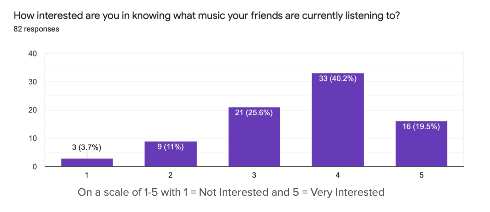
67%
regularly received song recommendations outside Spotify.
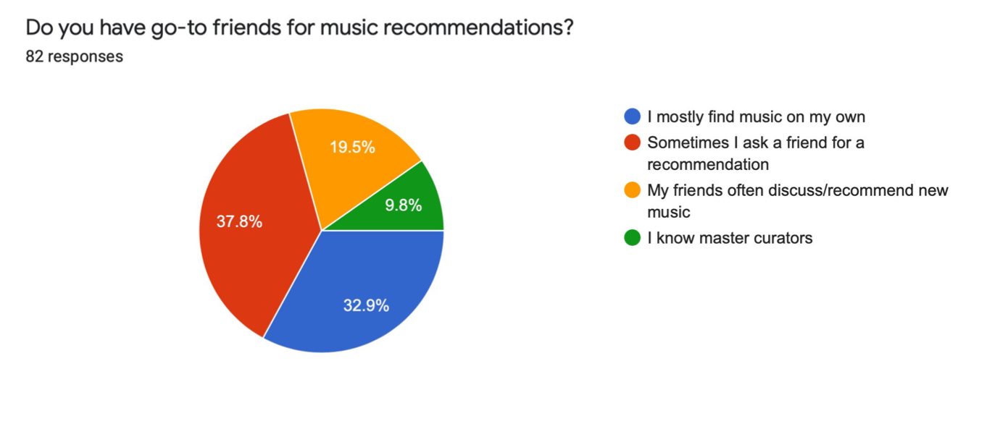
From behaviors to concepts
Ideation started from behaviors we could already observe.
Boombox
Existing behavior: posting Spotify links on social media so friends can see what they’re listening to
→ Opportunity: keep music suggestions in the app
Best Buds
Existing behavior: watch parties on streaming platforms
→ Opportunity: create shared listening sessions for connection, regardless of physical proximity
Anthems
Existing behavior: expressing personal identity through music
→ Opportunity: make music taste part of your profile
Three social listening experiences
The final concept is composed of three complementary interfaces, each with a different social job. Together, these features evolve Spotify from a streaming utility to a new form of social media.
Boombox offers a temporary, curated glimpse into what someone is listening to right now. Friends can discover recommendations through someone’s current rotation, then revisit the session after it ends.
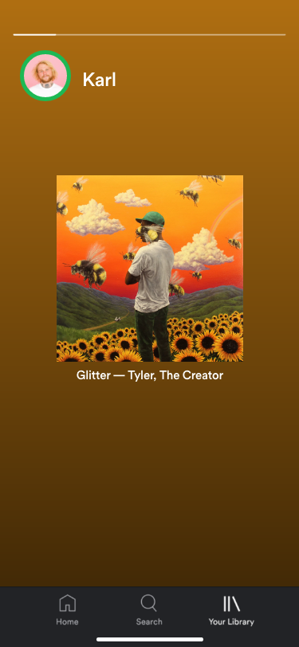
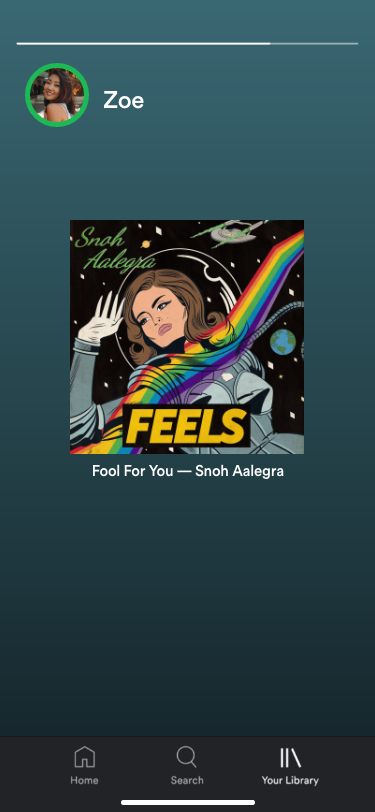
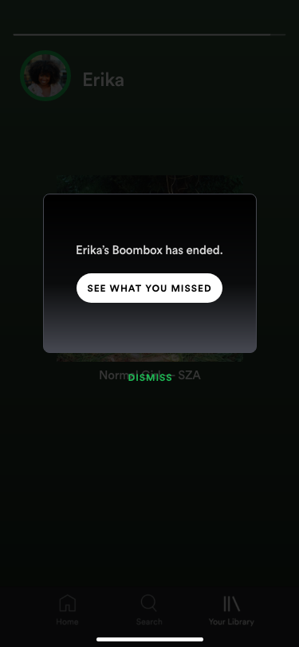
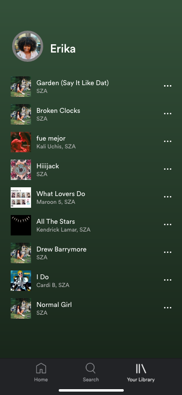
Best Buds offers a shared listening mode for discovering what friends are listening to in real time. Users can start a listening session, invite friends to join, and see who is listening alongside them.
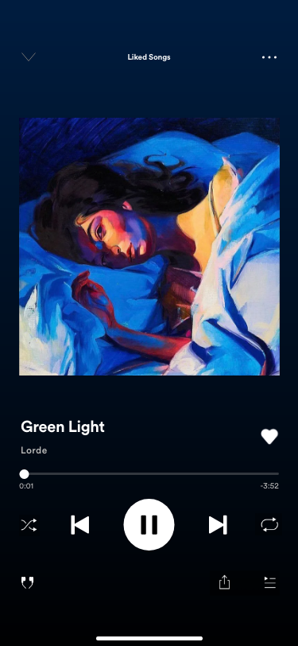
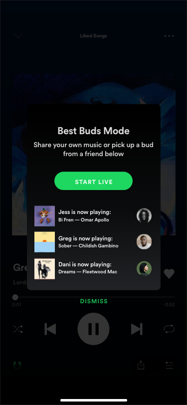
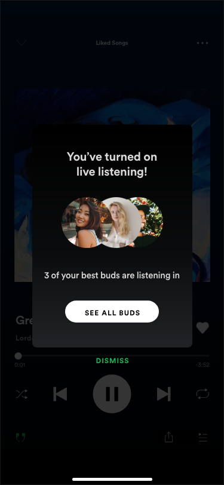
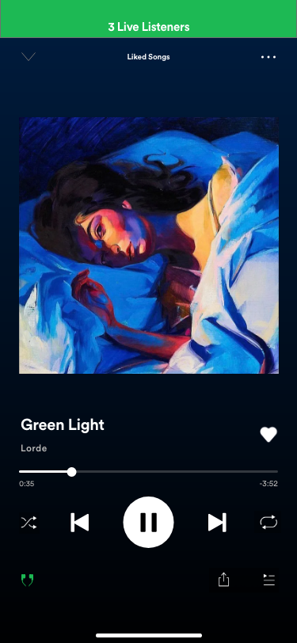
Anthems allows for songs to be pinned to Spotify profiles to let the music do the talking, rather than a bio.
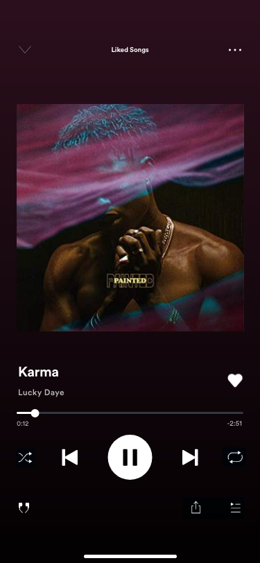
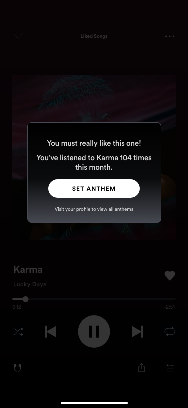
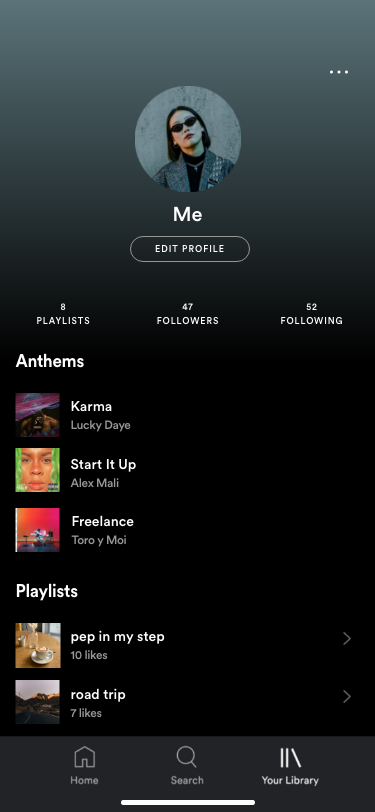
Takeaway
This project reinforced the value of using research to identify the behavior behind a product opportunity before designing the interface.
The research showed that social music discovery was already happening outside of Spotify. The design challenge became less about adding social features and more about deciding which social behaviors belonged inside the listening experience and how they could feel native to the product. The result was three complementary concepts exploring sharing, shared listening, and musical identity.
What I’d do next
Prototype and test the three concepts to understand which social behaviors provide the most value without disrupting Spotify’s core listening experience.